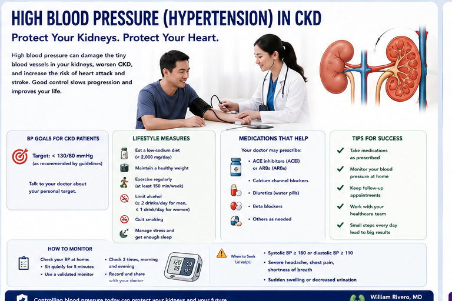
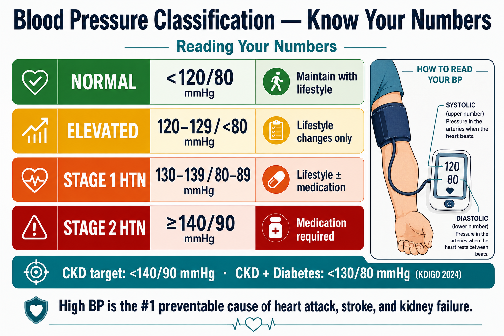
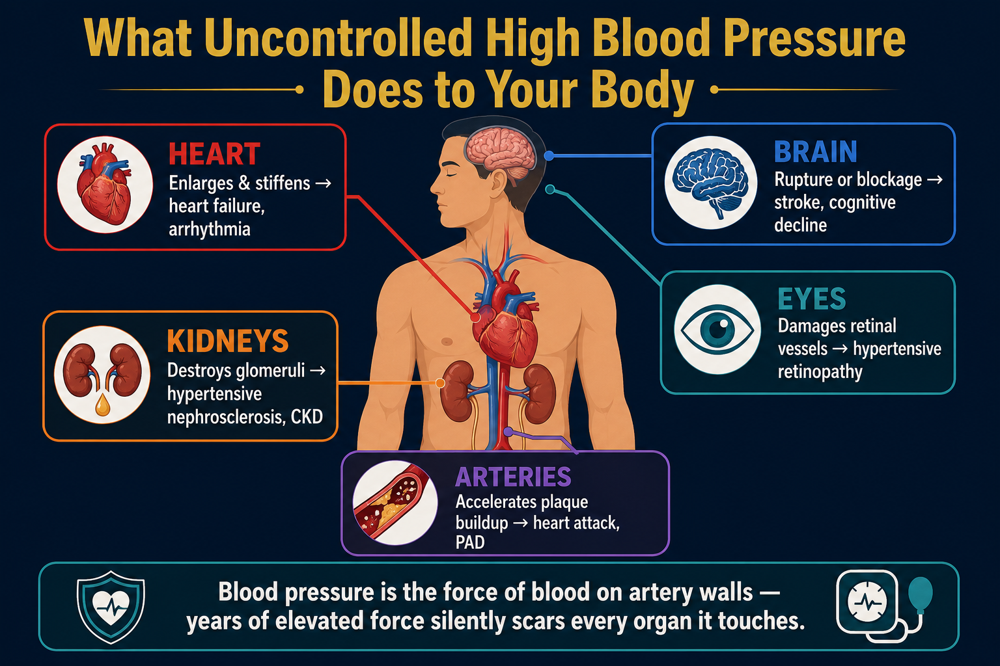
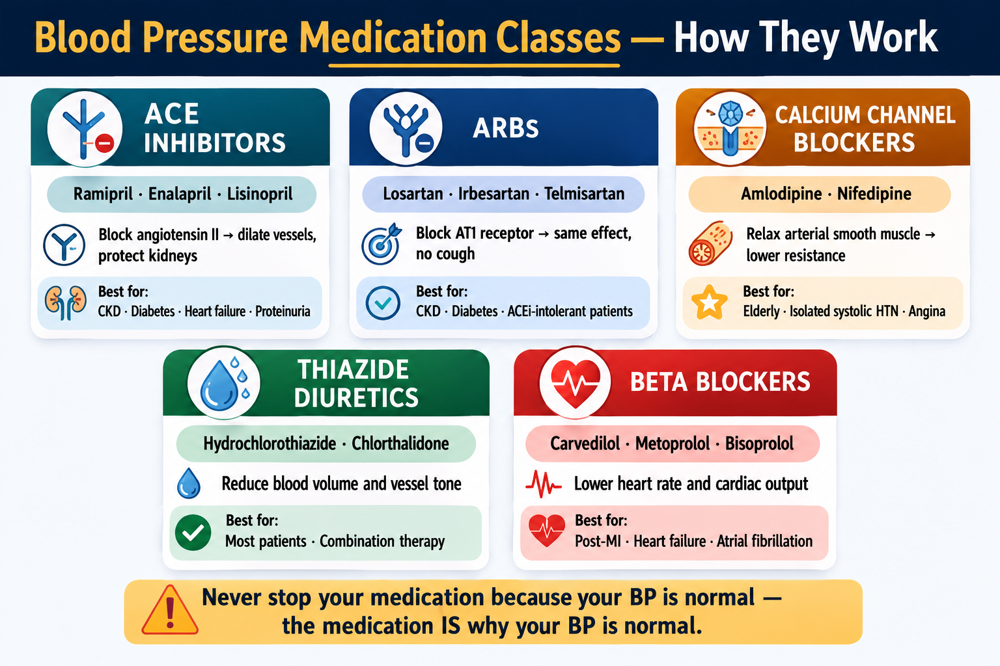

What is High Blood Pressure?Ano ang Mataas na Presyon ng Dugo?Unsa ang Taas nga Presyon sa Dugo? Ano ing Matas a Presyon ning Daya?

Home blood pressure monitoring is more reliable than office readings. Measure in the morning before medications, seated quietly for 5 minutes, twice daily for one week.Ang pagsubaybay ng presyon ng dugo sa bahay ay mas mapagkakatiwalaan kaysa sa mga pagbabasa sa klinika. Sukatín sa umaga bago ang mga gamot, nakaupo nang tahimik nang 5 minuto, dalawang beses sa isang araw sa loob ng isang linggo.Ang pagbantay sa presyon sa dugo sa balay mas masaligan kaysa sa mga pagbasa sa klinika. Sukta sa buntag sa wala pa ang mga medisina, naglingkod nga hilum sulod sa 5 minuto, duha ka beses sa usa ka adlaw sulod sa usa ka semana. Ing pagsubaybay ning presyon ning daya king bale ya mas mapagkakatiwalaan kaysa king deng pagbabasa king klinika. Sukatín king umaga bago ing deng gamut, nakaupo nang tahimik nang 5 minuto, dalawang beses king metung a aldo king loob ning metung a lutu.
Every time your heart beats, it pushes blood through your arteries. Blood pressure is the force of that blood against the artery walls. When this force is consistently too high, it silently damages your heart, kidneys, brain, and eyes — often for years before any symptoms appear.Sa bawat tibok ng inyong puso, itinutulak nito ang dugo sa pamamagitan ng inyong mga ugat. Ang presyon ng dugo ay ang lakas ng dugong iyon laban sa mga dingding ng ugat. Kapag ang lakas na ito ay lagi nang masyadong mataas, tahimik nitong nasisira ang inyong puso, bato, utak, at mata — madalas sa loob ng maraming taon bago lumabas ang anumang sintomas.Sa matag pukpok sa inyong kasingkasing, giitsa niini ang dugo sa tibuok inyong mga ugat. Ang presyon sa dugo mao ang kusog sa maong dugo batok sa mga bungbong sa ugat. Kon kining kusog kanunay nga taas kaayo, hilom niining ginadaot ang inyong kasingkasing, mga bato, utok, ug mata — kasagaran sulod sa daghang tuig sa wala pa makit-an ang bisan unsang sintomas. King bawat tibok ning inyu pusu, itinutulak nini ing daya king pamamagitan ning inyu deng ugat. Ing presyon ning daya ya ing lakas ning dugong iyun laban king deng dingding ning ugat. Nung ing lakas a ini ya lagi nang masyadong matas, tahimik nitong nasisira ing inyu pusu, batu, utak, at mata — madalas king loob ning dacal a banua bago lumabas ing anumang sintomas.
Hypertension is defined as a blood pressure of 140/90 mmHg or higher on repeated measurements. It is the single most common preventable cause of heart attack, stroke, and kidney failure in the Philippines.Ang hypertension ay tinukuyan bilang presyon ng dugo na 140/90 mmHg o mas mataas sa paulit-ulit na pagsukat. Ito ang pinaka-karaniwang mapipigilan na sanhi ng atake sa puso, stroke, at pagkabigo ng bato sa Pilipinas.Ang hypertension gihulagway ingon presyon sa dugo nga 140/90 mmHg o mas taas sa paulit-ulit nga pagsukat. Kini ang pinaka-komon nga mapugngan nga hinungdan sa atake sa kasingkasing, stroke, ug pagpalya sa bato sa Pilipinas. Ing hypertension ya tinukuyan bilang presyon ning daya a 140/90 mmHg o mas matas king paulit-ulit a pagsukat. Ini ing pinaka-karaniwang mapipigilan a sanhi ning atake king pusu, stroke, at pagkabigo ning batu king Pilipinas.
The "silent killer"Ang "tahimik na mamamatay"Ang "hilom nga mamamatay" Ing "tahimik a mamamatay"
Most people with hypertension feel completely normal — no headache, no symptoms. By the time symptoms appear, significant organ damage has often already occurred. This is why regular blood pressure monitoring is essential even when you feel well.Karamihan sa mga taong may hypertension ay ganap na normal ang nararamdaman — walang sakit ng ulo, walang sintomas. Sa oras na lumabas ang mga sintomas, kadalasan ay nagkaroon na ng malaking pinsala sa mga organo. Kaya naman ang regular na pagsubaybay ng presyon ng dugo ay mahalaga kahit na maayos ang pakiramdam ninyo.Kadaghanan sa mga tawo nga adunay hypertension hingpit nga normal ang gibati — walay sakit sa ulo, walay sintomas. Sa panahon nga mogawas ang mga sintomas, kasagaran aduna nay dakong kadaot sa mga organo. Mao kini ngano nga ang regular nga pagbantay sa presyon sa dugo importante bisan pa maayo ang inyong gibati. Kadaklan king deng taong atin hypertension ya ganap a normal ing nararamdaman — alang sakit ning ulo, alang sintomas. King oras a lumabas ing deng sintomas, kadalasan ya nagkaroon a ning malaking pinsala king deng organo. Kaya naman ing regular a pagsubaybay ning presyon ning daya ya importante kahit a maayos ing pakiramdam ninyo.
How common is it?Gaano ito kadalas?Unsa kadaghan kini? Gaano ini kadalas?
Approximately 1 in 4 Filipino adults has hypertension — and many don't know it. Among patients with CKD or diabetes, the proportion is even higher, and the urgency of control is even greater.Humigit-kumulang 1 sa 4 na matatandang Pilipino ay may hypertension — at marami ang hindi ito alam. Sa mga pasyenteng may CKD o diabetes, mas mataas pa ang proporsyon, at mas napakahalaga ng pagkontrol.Mga 1 sa 4 ka hamtong nga Pilipino adunay hypertension — ug daghan ang wala mahibalo niini. Sa mga pasyente nga adunay CKD o diabetes, mas taas pa ang proporsyon, ug mas hinungdanon ang pagkontrol. Humigit-kumulang 1 king 4 a matatandang Pilipino ya atin hypertension — at dacal ing ali ini alam. King deng pasyenteng atin CKD o diabetes, mas matas pa ing proporsyon, at mas napakahalaga ning pagkontrol.
Understanding Blood Pressure ReadingsPag-unawa sa mga Pagbabasa ng Presyon ng DugoPagsabut sa mga Pagbasa sa Presyon sa Dugo Pag-unawa king deng Pagbabasa ning Presyon ning Daya
A blood pressure reading has two numbers. The top number (systolic) is the pressure when your heart beats. The bottom number (diastolic) is the pressure when your heart rests between beats.Ang pagbabasa ng presyon ng dugo ay may dalawang numero. Ang itaas na numero (systolic) ay ang presyon kapag tumitibok ang inyong puso. Ang ibabang numero (diastolic) ay ang presyon kapag nagpapahinga ang inyong puso sa pagitan ng mga tibok.Ang pagbasa sa presyon sa dugo adunay duha ka numero. Ang ibabaw nga numero (systolic) mao ang presyon kon mobukto ang inyong kasingkasing. Ang ubos nga numero (diastolic) mao ang presyon kon nagpahulay ang inyong kasingkasing tali sa mga bukto. Ing pagbabasa ning presyon ning daya ya atin dalawang numero. Ing itaas a numero (systolic) ya ing presyon nung tumitibok ing inyu pusu. Ing ibabang numero (diastolic) ya ing presyon nung nagpapahinga ing inyu pusu king pagitan ning deng tibok.

Blood pressure classificationKlasipikasyon ng presyon ng dugoKlasipikasyon sa presyon sa dugo Klasipikasyon ning presyon ning daya
The stages above follow the international (US ACC/AHA) scheme. Filipino doctors use a simpler local classification and define hypertension at 140/90 — see What the 2020 Philippine Guidelines Recommend below.Ang mga yugto sa itaas ay sumusunod sa internasyonal (US ACC/AHA) na pamamaraan. Gumagamit ang mga doktor na Pilipino ng mas simpleng lokal na klasipikasyon at tinutukoy ang hypertension sa 140/90 — tingnan ang Ang Inirerekomenda ng 2020 Philippine Guidelines sa ibaba.Ang mga yugto sa ibabaw nagsunod sa internasyonal (US ACC/AHA) nga pamaagi. Naggamit ang mga doktor nga Pilipino og mas simple nga lokal nga klasipikasyon ug gihubit ang hypertension sa 140/90 — tan-awa ang Ang Girekomenda sa 2020 Philippine Guidelines sa ubos.Ing deng yugto king itaas ya tinuki king internasyonal (US ACC/AHA) a pamamaraan. Gagamit ing deng doktor a Pilipino ning mas simpleng lokal a klasipikasyon at tinutukoy ing hypertension king 140/90 — lawan ing Ing Inirerekomenda ning 2020 Philippine Guidelines king babo.
White coat hypertensionWhite coat hypertensionWhite coat hypertension White coat hypertension
Some people have elevated readings only at the clinic — normal at home. This is called "white coat" hypertension and is not benign. Home monitoring over several days gives a more accurate picture of your true blood pressure and guides treatment decisions more reliably.Ang ilang mga tao ay may mataas na pagbabasa lamang sa klinika — normal sa bahay. Ito ay tinatawag na "white coat" hypertension at hindi ito walang panganib. Ang pagsubaybay sa bahay sa loob ng ilang araw ay nagbibigay ng mas tumpak na larawan ng inyong tunay na presyon ng dugo at mas mapagkakatiwalaang gabay sa mga desisyon sa paggamot.Ang uban nga mga tawo adunay taas nga pagbasa lamang sa klinika — normal sa balay. Gitawag kini nga "white coat" hypertension ug dili kini walay risgo. Ang pagbantay sa balay sulod sa pipila ka adlaw naghatag ug mas tukma nga hulagway sa inyong tinuod nga presyon sa dugo ug mas kasaligan nga giya sa mga desisyon sa pagtambal. Ing ilang deng tao ya atin matas a pagbabasa lamang king klinika — normal king bale. Ini ya tinatawag a "white coat" hypertension at ali ini alang panganib. Ing pagsubaybay king bale king loob ning ilang aldo ya nagbibigay ning mas tumpak a larawan ning inyu tunay a presyon ning daya at mas mapagkakatiwalaang gabay king deng desisyon king paggamut.
What the 2020 Philippine Guidelines RecommendAng Inirerekomenda ng 2020 Philippine GuidelinesAng Girekomenda sa 2020 Philippine GuidelinesIng Inirerekomenda ning 2020 Philippine Guidelines
Filipino doctors follow the 2020 Philippine Clinical Practice Guidelines for the Management of Hypertension, written by local heart, kidney, and medical societies. Unlike the American guidelines that call 130/80 "high," the Philippine guideline keeps the diagnosis of hypertension at 140/90 mmHg or higher — but still aims to bring most patients down to below 130/80 with treatment.Sinusunod ng mga doktor na Pilipino ang 2020 Philippine Clinical Practice Guidelines for the Management of Hypertension, na isinulat ng mga lokal na samahan sa puso, bato, at medisina. Hindi tulad ng American guidelines na tinatawag na "mataas" ang 130/80, pinananatili ng Philippine guideline ang diagnosis ng hypertension sa 140/90 mmHg o mas mataas — ngunit nagsisikap pa ring ibaba ang karamihan ng pasyente sa ibaba ng 130/80 sa pamamagitan ng gamot.Gisunod sa mga doktor nga Pilipino ang 2020 Philippine Clinical Practice Guidelines for the Management of Hypertension, nga gisulat sa mga lokal nga kapunongan sa kasingkasing, kidney, ug medisina. Dili sama sa American guidelines nga gitawag nga "taas" ang 130/80, gipabilin sa Philippine guideline ang diagnosis sa hypertension sa 140/90 mmHg o mas taas — apan naningkamot gihapon nga ipaubos ang kadaghanan sa pasyente ngadto sa ubos sa 130/80 pinaagi sa tambal.Tinuki ning deng doktor a Pilipino ing 2020 Philippine Clinical Practice Guidelines for the Management of Hypertension, a sinulat ning deng lokal a samahan king pusu, bato, at medisina. Ali anti king American guidelines a tinatawag a "matas" ing 130/80, pinananatili ning Philippine guideline ing diagnosis ning hypertension king 140/90 mmHg o mas matas — pero nagsisikap pa rin a ibaba ing karamihan ning pasyente king ibaba ning 130/80 king pamamagitan ning gamut.
Filipino blood pressure categoriesMga kategorya ng presyon ng dugo sa PilipinasMga kategorya sa presyon sa dugo sa PilipinasDeng kategorya ning presyon ning daya king Pilipinas
| CategoryKategoryaKategoryaKategorya | Office readingPagbabasa sa klinikaPagbasa sa klinikaPagbabasa king klinika |
|---|---|
| NormalNormalNormalNormal | < 120/80 mmHg |
| BorderlineBorderlineBorderlineBorderline | 120–139 / 80–89 mmHg |
| HypertensionHypertensionHypertensionHypertension | ≥ 140/90 mmHg |
The diagnosis should be confirmed on at least two separate days, ideally with home or 24-hour (ambulatory) monitoring rather than a single clinic reading.Dapat kumpirmahin ang diagnosis sa hindi bababa sa dalawang magkahiwalay na araw, mas mainam sa pamamagitan ng home o 24-oras (ambulatory) na pagsubaybay sa halip na isang pagbabasa lang sa klinika.Kinahanglan kumpirmahon ang diagnosis sa labing menos duha ka lahi nga adlaw, mas maayo pinaagi sa home o 24-oras (ambulatory) nga pagbantay imbes nga usa lang ka pagbasa sa klinika.Dapat kumpirmahin ing diagnosis king ali bababa king dalawang magkahiwalay a aldo, mas mainam king pamamagitan ning home o 24-oras (ambulatory) a pagsubaybay imbes ning metung a pagbabasa mu king klinika.
When treatment starts & the goalKailan magsisimula ang paggamot at ang layuninKanus-a magsugod ang pagtambal ug ang tumongKapilan magsisimula ing paggamut at ing layunin
First-line medicinesMga unang-piling gamotMga unang-pili nga tambalDeng mumunang-piling gamut
The guideline names four equally suitable starter drug classes. Your doctor may begin with one, or with a low-dose combination of two if your blood pressure is well above goal (over 150/100, or over 160/100 in the elderly).Pinangalanan ng gabay ang apat na pantay na angkop na panimulang klase ng gamot. Maaaring magsimula ang inyong doktor sa isa, o sa mababang dosis na kombinasyon ng dalawa kung malayo sa layunin ang inyong presyon (lampas 150/100, o lampas 160/100 sa matatanda).Ginganlan sa giya ang upat ka managsama nga angay nga sinugdanang klase sa tambal. Mahimong magsugod ang inyong doktor sa usa, o sa ubos nga dosis nga kombinasyon sa duha kung halayo sa tumong ang inyong presyon (labaw 150/100, o labaw 160/100 sa tigulang).Pinangalanan ning gabay ing apat a pantay a angkop a panimulang klase ning gamut. Malyaring magsimula ing inyu doktor king metung, o king mababang dosis a kombinasyon ning adwa nung marayu king layunin ing inyu presyon (lampas 150/100, o lampas 160/100 king matua).
ACE inhibitors / ARBs
e.g. enalapril, losartan, telmisartan. Especially protective for the kidneys.hal. enalapril, losartan, telmisartan. Lalo na protektibo para sa mga bato.pananglitan enalapril, losartan, telmisartan. Ilabi nang mapanalipdon sa mga kidney.alimbawa enalapril, losartan, telmisartan. Lalu nang protektibo para king deng bato.
Calcium channel blockersCalcium channel blockersCalcium channel blockersCalcium channel blockers
e.g. amlodipine. Reliable, widely available, well-tolerated.hal. amlodipine. Maaasahan, malawak na magagamit, mahusay na natitiis.pananglitan amlodipine. Kasaligan, halapad nga makuha, maayong gidawat.alimbawa amlodipine. Maaasahan, malwak a magagamit, mayap a natitiis.
Thiazide-like diureticsThiazide-like diureticsThiazide-like diureticsThiazide-like diuretics
e.g. hydrochlorothiazide, indapamide. "Water pills" that lower volume.hal. hydrochlorothiazide, indapamide. "Water pills" na nagpapababa ng dami ng tubig.pananglitan hydrochlorothiazide, indapamide. "Water pills" nga nagpaubos sa volume.alimbawa hydrochlorothiazide, indapamide. "Water pills" a nagpapababa ning dami ning danum.
Two RAS blockers together — not allowedDalawang RAS blocker nang sabay — bawalDuha ka RAS blocker nga dungan — dili gitugotanAdwang RAS blocker a sabay — bawal
An ACE inhibitor and an ARB should never be combined — it raises the risk of kidney injury and high potassium without added benefit.Hindi dapat pagsamahin ang ACE inhibitor at ARB — pinapataas nito ang panganib ng pinsala sa bato at mataas na potassium nang walang dagdag na benepisyo.Ang ACE inhibitor ug ARB dili gyud angay iipon — gipataas niini ang risgo sa kadaot sa kidney ug taas nga potassium nga walay dugang nga benepisyo.Ali dapat pagsamahin ing ACE inhibitor at ARB — pinapataas niti ing panganib ning pinsala king bato at matas a potassium a alang dagdag a benepisyo.
If you also have kidney diseaseKung mayroon din kayong sakit sa batoKung naa say sakit sa kidneyNung atin ka mu sakit king bato
CKD-specific advice from the Philippine guidelinePayo na partikular sa CKD mula sa Philippine guidelineTambag nga partikular sa CKD gikan sa Philippine guidelinePayo a partikular king CKD ibat king Philippine guideline
For most people with chronic kidney disease, the goal is below 130/80. If your urine shows protein (albumin), an ACE inhibitor or ARB is the preferred first drug because it protects the kidneys — your doctor will not stop it unless your creatinine rises more than 30% or your potassium climbs too high. For stubborn (resistant) high blood pressure already on three drugs, a mineralocorticoid receptor antagonist (such as spironolactone) may be added, and taking at least one medicine at bedtime can help.Para sa karamihan ng may chronic kidney disease, ang layunin ay ibaba ng 130/80. Kung may protina (albumin) ang inyong ihi, ang ACE inhibitor o ARB ang nais na unang gamot dahil pinoprotektahan nito ang mga bato — hindi ito ititigil ng inyong doktor maliban kung tumaas ang inyong creatinine nang higit 30% o sobrang taas ng potassium. Para sa matigas (resistant) na altapresyon na nasa tatlong gamot na, maaaring idagdag ang mineralocorticoid receptor antagonist (tulad ng spironolactone), at makakatulong ang pag-inom ng kahit isang gamot bago matulog.Para sa kadaghanan nga adunay chronic kidney disease, ang tumong mao ang ubos sa 130/80. Kung adunay protina (albumin) ang inyong ihi, ang ACE inhibitor o ARB mao ang gipalabi nga unang tambal kay gipanalipdan niini ang mga kidney — dili kini hunongon sa inyong doktor gawas kung mosaka ang inyong creatinine labaw 30% o sobra ka taas ang potassium. Para sa gahi (resistant) nga taas nga presyon nga naa nay tulo ka tambal, mahimong idugang ang mineralocorticoid receptor antagonist (sama sa spironolactone), ug makatabang ang pag-inom og labing menos usa ka tambal sa dili pa matulog.Para king karamihan a atin chronic kidney disease, ing layunin ya ing ibaba ning 130/80. Nung atin protina (albumin) ing inyu ihi, ing ACE inhibitor o ARB ing nais a mumunang gamut uli pinoprotektahan niti ing deng bato — ali ya ititigil ning inyu doktor maliban nung tumaas ing inyu creatinine king higit 30% o sobrang tas ing potassium. Para king matigas (resistant) a altapresyon a atyu king atlung gamut na, malyaring idagdag ing mineralocorticoid receptor antagonist (anti ning spironolactone), at makakatulung ing pag-inum ning kahit metung a gamut bayu matudtud.
Source: Ona DID, Jimeno CA, Jasul GV Jr, et al. Executive summary of the 2020 clinical practice guidelines for the management of hypertension in the Philippines. J Clin Hypertens. 2021;23(9):1637–1650.Pinagmulan: Ona DID, Jimeno CA, Jasul GV Jr, et al. Executive summary of the 2020 clinical practice guidelines for the management of hypertension in the Philippines. J Clin Hypertens. 2021;23(9):1637–1650.Tinubdan: Ona DID, Jimeno CA, Jasul GV Jr, et al. Executive summary of the 2020 clinical practice guidelines for the management of hypertension in the Philippines. J Clin Hypertens. 2021;23(9):1637–1650.Pemikwan: Ona DID, Jimeno CA, Jasul GV Jr, et al. Executive summary of the 2020 clinical practice guidelines for the management of hypertension in the Philippines. J Clin Hypertens. 2021;23(9):1637–1650.
What Uncontrolled Hypertension Does to Your BodyAno ang Ginagawa ng Hindi Kontroladong Hypertension sa Inyong KatawanUnsa ang Gibuhat sa Wala Makontrol nga Hypertension sa Inyong Lawas Ano ing Ginagawa ning Ali Kontroladong Hypertension king Inyu Bangkî
Persistently elevated blood pressure damages blood vessels throughout the body. The organs most vulnerable are those with the richest blood supply and most delicate vessels.Ang patuloy na mataas na presyon ng dugo ay nagdudulot ng pinsala sa mga daluyan ng dugo sa buong katawan. Ang mga organo na pinaka-bulnerable ay ang mga may pinakamayamang suplay ng dugo at pinakamaselang mga daluyan.Ang padayon nga taas nga presyon sa dugo nagadaot sa mga ugat sa tibuok lawas. Ang mga organo nga labing madaot mao ang mga adunay pinakadato nga suplay sa dugo ug pinaka-delikadong mga ugat. Ing patuloy a matas a presyon ning daya ya nagdudulot ning pinsala king deng daluyan ning daya king buong bangkî. Ing deng organo a pinaka-bulnerable ya ing deng atin pinakamayamang suplay ning daya at pinakamaselang deng daluyan.

HeartPusoKasingkasing Pusu
The heart works harder against high resistance, causing it to enlarge and stiffen. This leads to heart failure, coronary artery disease, and irregular heart rhythms (atrial fibrillation).Ang puso ay mas mahirap na nagtatrabaho laban sa mataas na resistensya, na nagiging sanhi ng pagpalaki at pagtigas nito. Ito ay humahantong sa heart failure, coronary artery disease, at hindi regular na tibok ng puso (atrial fibrillation).Ang kasingkasing mas kusog nga nagtrabaho batok sa taas nga resistensya, nga naghimo niini nga mopadako ug motig-a. Kini nagdala sa heart failure, coronary artery disease, ug dili regular nga tibok sa kasingkasing (atrial fibrillation). Ing pusu ya mas mahirap a nagtatrabaho laban king matas a resistensya, a nagiging sanhi ning pagpalaki at pagtigas nini. Ini ya humahantong king heart failure, coronary artery disease, at ali regular a tibok ning pusu (atrial fibrillation).
KidneysBatoMga Bato Batu
High pressure damages the tiny arterioles feeding each glomerulus. Over years this causes hypertensive nephrosclerosis — progressive scarring and CKD. Uncontrolled hypertension is the #2 cause of kidney failure in the Philippines.Ang mataas na presyon ay nagdudulot ng pinsala sa maliliit na arteriola na nagpapakain sa bawat glomerulus. Sa loob ng maraming taon ito ay nagdudulot ng hypertensive nephrosclerosis — progresibong pagkapeklat at CKD. Ang hindi kontroladong hypertension ay ika-2 pinaka-sanhi ng pagkabigo ng bato sa Pilipinas.Ang taas nga presyon nagadaot sa gagmay nga arteriola nga nagpakaon sa matag glomerulus. Sulod sa daghang tuig kini nagdala sa hypertensive nephrosclerosis — progresibo nga pagpeklat ug CKD. Ang wala makontrol nga hypertension mao ang ika-2 hinungdan sa pagpalya sa bato sa Pilipinas. Ing matas a presyon ya nagdudulot ning pinsala king maliliit a arteriola a nagpapakain king bawat glomerulus. King loob ning dacal a banua ini ya nagdudulot ning hypertensive nephrosclerosis — progresibong pagkapeklat at CKD. Ing ali kontroladong hypertension ya ika-2 pinaka-sanhi ning pagkabigo ning batu king Pilipinas.
BrainUtakUtok Utak
Damaged cerebral arteries are prone to rupture (hemorrhagic stroke) or blockage (ischemic stroke). Hypertension also causes white matter changes that impair memory and cognition over time.Ang mga nasirang ugat sa utak ay madaling mapunit (hemorrhagic stroke) o masara (ischemic stroke). Ang hypertension ay nagdudulot din ng mga pagbabago sa white matter na nagpapahina ng memorya at pag-iisip sa paglipas ng panahon.Ang mga nadaot nga ugat sa utok dali mapusgay (hemorrhagic stroke) o masalgan (ischemic stroke). Ang hypertension nagadala usab sa mga pagbag-o sa white matter nga nagpahuyang sa memorya ug pag-isip sa paglabay sa panahon. Ing deng nasirang ugat king utak ya madaling mapunit (hemorrhagic stroke) o masara (ischemic stroke). Ing hypertension ya nagdudulot din ning deng pagbabago king white matter a nagpapahina ning memorya at pag-iisip king paglipas ning panahon.
EyesMataMga Mata Mata
Hypertensive retinopathy damages the delicate vessels of the retina. Advanced cases cause vision loss. An eye exam can reveal the severity of vascular damage throughout your body.Ang hypertensive retinopathy ay nagdudulot ng pinsala sa maselang mga daluyan ng retina. Ang mga advanced na kaso ay nagdudulot ng pagkawala ng paningin. Ang pagsusuri sa mata ay maaaring magsiwalat ng kalubhaan ng vascular damage sa buong katawan ninyo.Ang hypertensive retinopathy nagadaot sa delikadong mga ugat sa retina. Ang mga advanced nga kaso nagdala sa pagkawala sa panan-aw. Ang pagsusi sa mata makapadayag sa grabidad sa vascular damage sa tibuok inyong lawas. Ing hypertensive retinopathy ya nagdudulot ning pinsala king maselang deng daluyan ning retina. Ing deng advanced a kaso ya nagdudulot ning pagkaala ning paningin. Ing pagsusuri king mata ya maaaring magsiwalat ning kalubhaan ning vascular damage king buong bangkî ninyo.
ArteriesMga UgatMga Ugat Deng Ugat
Chronic high pressure accelerates atherosclerosis — the buildup of plaques in artery walls. This increases risk of heart attack, peripheral artery disease, and aortic aneurysm.Ang matagal na mataas na presyon ay nagpapabilis ng atherosclerosis — ang pagtitipon ng mga plaque sa mga dingding ng ugat. Pinapataas nito ang panganib ng atake sa puso, peripheral artery disease, at aortic aneurysm.Ang kronikong taas nga presyon nagpaabtik sa atherosclerosis — ang pagtipon sa mga plaque sa mga bungbong sa ugat. Kini nagdugang sa risgo sa atake sa kasingkasing, peripheral artery disease, ug aortic aneurysm. Ing matagal a matas a presyon ya nagpapabilis ning atherosclerosis — ing pagtitipon ning deng plaque king deng dingding ning ugat. Pinapataas nini ing panganib ning atake king pusu, peripheral artery disease, at aortic aneurysm.
Blood Pressure Medications — What They DoMga Gamot para sa Presyon ng Dugo — Ano ang Ginagawa NilaMga Medisina para sa Presyon sa Dugo — Unsa ang Ilang Gibuhat Deng Gamut para king Presyon ning Daya — Ano ing Ginagawa Nila
Most patients with Stage 2 hypertension or hypertension with organ damage require one or more medications. These are not a sign of failure — they are powerful tools that protect your organs when lifestyle changes alone are insufficient.Karamihan sa mga pasyente na may Stage 2 hypertension o hypertension na may pinsala sa organo ay nangangailangan ng isa o higit pang mga gamot. Hindi ito tanda ng kabiguan — sila ay makapangyarihang kagamitan na nagpoprotekta sa inyong mga organo kapag ang mga pagbabago sa pamumuhay ay hindi sapat.Kadaghanan sa mga pasyente nga adunay Stage 2 hypertension o hypertension nga adunay kadaot sa organo nanginahanglan ug usa o dugang pa nga mga medisina. Kini dili timaan sa kapakyasan — kini mga gamhanang himan nga nagpanalipod sa inyong mga organo kon ang mga pagbag-o sa pamumuhay dili igo. Kadaklan king deng pasyente a atin Stage 2 hypertension o hypertension a atin pinsala king organo ya nangangailangan ning metung o higit pang deng gamut. Ali ini tanda ning kabiguan — sila ya makapangyarihang kagamitan a nagpoprotekta king inyu deng organo nung ing deng pagbabago king pamumuhay ya ali sapat.

| Drug ClassKlase ng GamotKlase sa Medisina Klase ning Gamut | ExamplesMga HalimbawaMga Pananglitan Deng Halimbawa | How it worksPaano gumaganaUnsaon kini paggana Paano gumagana | Best forPinakamainam para saLabing maayo para sa Pinakamainam para king |
|---|---|---|---|
| ACE Inhibitors | Ramipril, Enalapril, Lisinopril | Block angiotensin II production — dilate blood vessels and reduce kidney filtration pressureHinahadlangan ang produksyon ng angiotensin II — pinalawak ang mga daluyan ng dugo at binabawasan ang presyon sa pagsala ng batoGibalda ang produksyon sa angiotensin II — gipadako ang mga ugat ug gipababa ang presyon sa pagsala sa bato Hinahadlangan ing produksyon ning angiotensin II — pinalawak ing deng daluyan ning daya at binabawasan ing presyon king pagsala ning batu | CKD, diabetes, heart failure, proteinuriaCKD, diabetes, heart failure, proteinuriaCKD, diabetes, heart failure, proteinuria CKD, diabetes, heart failure, proteinuria |
| ARBs | Losartan, Irbesartan, Telmisartan, Valsartan | Block angiotensin II receptor — same effect as ACE inhibitors but better tolerated (no cough)Hinahadlangan ang receptor ng angiotensin II — parehong epekto sa ACE inhibitors ngunit mas mahusay na natatanggap (walang ubo)Gibalda ang receptor sa angiotensin II — sama nga epekto sa ACE inhibitors apan mas maayo nga gidawat (walay ubo) Hinahadlangan ing receptor ning angiotensin II — parehong epekto king ACE inhibitors ngarud mas mahusay a natatanggap (alang ubo) | CKD, diabetes, proteinuria — preferred when ACE inhibitor causes coughCKD, diabetes, proteinuria — ginusto kapag ang ACE inhibitor ay nagdudulot ng uboCKD, diabetes, proteinuria — gipalabi kon ang ACE inhibitor nagdala og ubo CKD, diabetes, proteinuria — ginusto nung ing ACE inhibitor ya nagdudulot ning ubo |
| Calcium Channel Blockers | Amlodipine, Nifedipine | Relax arterial smooth muscle by blocking calcium entry — reduce vascular resistancePinapaluwag ang makinis na kalamnan ng ugat sa pamamagitan ng paghahadlang ng pagpasok ng calcium — binabawasan ang vascular resistanceGiparelaks ang makinis nga kalamnan sa ugat pinaagi sa pagbalda sa pagsulod sa calcium — gipababa ang vascular resistance Pinapaluwag ing makinis a kalamnan ning ugat king pamamagitan ning paghahadlang ning pagpasok ning calcium — binabawasan ing vascular resistance | Elderly patients, isolated systolic hypertension, anginaMga matatandang pasyente, isolated systolic hypertension, anginaMga tigulang nga pasyente, isolated systolic hypertension, angina Deng matatandang pasyente, isolated systolic hypertension, angina |
| Thiazide Diuretics | Hydrochlorothiazide, Chlorthalidone | Increase sodium and water excretion — reduce blood volume and vessel tonePinapataas ang paglabas ng sodium at tubig — binabawasan ang dami ng dugo at tono ng ugatGipadako ang pagluwas sa sodium ug tubig — gipababa ang dami sa dugo ug tono sa ugat Pinapataas ing paglabas ning sodium at danum — binabawasan ing dami ning daya at tono ning ugat | Most patients; combination therapy; Black/Filipino patientsKaramihan sa mga pasyente; kombinasyong paggamot; mga pasyenteng Itim/PilipinoKadaghanan sa mga pasyente; kombinasyong pagtambal; mga pasyenteng Itom/Pilipino Kadaklan king deng pasyente; kombinasyong paggamut; deng pasyenteng Itim/Pilipino |
| Beta Blockers | Carvedilol, Metoprolol, Bisoprolol | Reduce heart rate and cardiac output — lower BP and protect the heartBinabawasan ang tibok ng puso at cardiac output — pinabababa ang BP at pinoprotektahan ang pusoGipababa ang tibok sa kasingkasing ug cardiac output — gipababa ang BP ug giprotektahan ang kasingkasing Binabawasan ing tibok ning pusu at cardiac output — pinabababa ing BP at pinoprotektahan ing pusu | Post-heart attack, heart failure, atrial fibrillationPagkatapos ng atake sa puso, heart failure, atrial fibrillationHuman sa atake sa kasingkasing, heart failure, atrial fibrillation Kapabanuan ning atake king pusu, heart failure, atrial fibrillation |
Never stop your medication because your BP is normalHuwag ihinto ang inyong gamot dahil normal na ang BPAyaw ihunong ang inyong medisina kay normal na ang BP Eka ihinto ing inyu gamut dahil normal a ing BP
Your blood pressure is normal because you are taking the medication — not evidence that you no longer need it. Stopping abruptly can cause rebound hypertension and dangerous spikes. Always consult your doctor before any medication change.Ang inyong presyon ng dugo ay normal dahil iniinom ninyo ang gamot — hindi ito katibayan na hindi na kayo nangangailangan nito. Ang biglang pagtigil ay maaaring magdulot ng rebound hypertension at mapanganib na pagtaas. Palaging kumonsulta sa inyong doktor bago gumawa ng anumang pagbabago sa gamot.Ang inyong presyon sa dugo normal kay nag-inom kamo sa medisina — kini dili ebidensya nga wala na kamo nanginahanglan niini. Ang kalit nga paghunong mahimong magdala sa rebound hypertension ug delikadong pagtaas. Kanunay mangonsulta sa inyong doktor sa wala pa magbag-o og bisan unsang medisina. Ing inyu presyon ning daya ya normal dahil iniinom ninyo ing gamut — ali ini katibayan a ali a kayu nangangailangan nini. Ing biglang pagtigil ya maaaring magdulot ning rebound hypertension at mapanganib a pagtaas. Papirming kumonsulta king inyu doktor bago gumawa ning anumang pagbabago king gamut.
Lifestyle Changes That Actually WorkMga Pagbabago sa Pamumuhay na Talagang EpektiboMga Pagbag-o sa Pamumuhay nga Tinuod nga Nagtrabaho Deng Pagbabago king Pamumuhay a Talagang Epektibo
Each lifestyle modification below has a quantified, evidence-based blood pressure reduction. Combined, they can lower BP by 15–20 mmHg — comparable to adding a second medication.Ang bawat pagbabago sa pamumuhay sa ibaba ay may nasukat, napatunayan na pagbaba ng presyon ng dugo. Sama-sama, maaari nilang ibaba ang BP ng 15–20 mmHg — katumbas ng pagdaragdag ng pangalawang gamot.Ang matag pagbag-o sa pamumuhay sa ubos adunay nasukat, ebidensya-base nga pagbaba sa presyon sa dugo. Magkahiusa, kini makapababa sa BP og 15–20 mmHg — katumbas sa pagdugang og ikaduhang medisina. Ing bawat pagbabago king pamumuhay king ibaba ya atin nasukat, napatunayan a pagbaba ning presyon ning daya. Sama-sama, maaari nilang ibaba ing BP ning 15–20 mmHg — katumbas ning pagdaragdag ning pangalawang gamut.

Reduce sodium — target <2,000 mg/day (1 teaspoon of salt)Bawasan ang sodium — target na <2,000 mg/araw (1 kutsarita ng asin)Pagkunhod sa sodium — target nga <2,000 mg/adlaw (1 kutsarita nga asin) Bawasan ing sodium — target a <2,000 mg/aldo (1 kutsarita ning asin)
Sodium causes water retention and vasoconstriction. Reducing it lowers systolic BP by 5–8 mmHg. In the Filipino diet, the biggest sources are patis (fish sauce), toyo (soy sauce), bagoong, instant noodles, and processed meats. Cook with herbs, calamansi, and garlic instead of salt.Ang sodium ay nagdudulot ng pagtatago ng tubig at vasoconstriction. Ang pagbabawas nito ay nagpapababa ng systolic BP ng 5–8 mmHg. Sa pagkain ng mga Pilipino, ang pinakamalaking pinagkukunan ay ang patis, toyo, bagoong, instant noodles, at mga processed na karne. Magluto gamit ang mga herbs, calamansi, at bawang sa halip na asin.Ang sodium nagdala sa pagpugong sa tubig ug vasoconstriction. Ang pagkunhod niini nagpababa sa systolic BP og 5–8 mmHg. Sa pagkaon sa mga Pilipino, ang pinakadakog tinubdan mao ang patis, toyo, bagoong, instant noodles, ug mga processed nga karne. Magluto gamit ang mga herbs, calamansi, ug bawang imbes nga asin. Ing sodium ya nagdudulot ning pagtatago ning danum at vasoconstriction. Ing pagbabawas nini ya nagpapababa ning systolic BP ning 5–8 mmHg. King pamangan ning deng Pilipino, ing pinakamalaking pinagkukunan ya ing patis, toyo, bagoong, instant noodles, at deng processed a karne. Magluto gamit ing deng herbs, calamansi, at bawang king halip a asin.
Follow a DASH-Filipino diet patternSundin ang DASH-Filipino na pattern ng diyetaSunda ang DASH-Filipino nga pattern sa diyeta Sundin ing DASH-Filipino a pattern ning diyeta
High in vegetables, fruits, and legumes — rich in potassium, magnesium, and calcium that naturally lower blood pressure. Local options: kangkong, pechay, sayote, ampalaya, camote tops, banana (moderate portions), and mongo beans. Potassium counteracts sodium's BP-raising effect.Mataas sa mga gulay, prutas, at legumes — mayaman sa potassium, magnesium, at calcium na natural na nagpapababa ng presyon ng dugo. Mga lokal na pagpipilian: kangkong, pechay, sayote, ampalaya, camote tops, saging (katamtamang dami), at monggo. Ang potassium ay nagkakansela ng epekto ng sodium sa pagpapataas ng BP.Taas sa mga utan, prutas, ug legumes — dato sa potassium, magnesium, ug calcium nga natural nga nagpababa sa presyon sa dugo. Mga lokal nga pagpilian: kangkong, pechay, sayote, ampalaya, camote tops, saging (katamtamang bahin), ug monggo. Ang potassium nagkansela sa epekto sa sodium sa pagpataas sa BP. Matas king deng gulay, prutas, at legumes — mayaman king potassium, magnesium, at calcium a natural a nagpapababa ning presyon ning daya. Deng lokal a pagpipilian: kangkong, pechay, sayote, ampalaya, camote tops, saging (katamtamang dami), at monggo. Ing potassium ya nagkakansela ning epekto ning sodium king pagpapataas ning BP.
Exercise 150 minutes per weekMag-ehersisyo ng 150 minuto bawat linggoMag-ehersisyo og 150 minuto matag semana Mag-ehersisyo ning 150 minuto bawat lutu
Regular aerobic exercise (brisk walking, cycling, swimming) lowers systolic BP by 5–8 mmHg. It improves arterial elasticity and insulin sensitivity simultaneously. Even 30 minutes of daily walking significantly reduces cardiovascular risk over time.Ang regular na aerobic exercise (mabilis na paglalakad, pagbibisikleta, paglangoy) ay nagpapababa ng systolic BP ng 5–8 mmHg. Pinapabuti nito ang elastisidad ng ugat at sensitivity sa insulin nang sabay-sabay. Kahit 30 minuto ng pang-araw-araw na paglalakad ay makabuluhang nagpapababa ng cardiovascular risk sa paglipas ng panahon.Ang regular nga aerobic exercise (paspas nga paglakaw, pagsakay sa bisikleta, paglangoy) nagpababa sa systolic BP og 5–8 mmHg. Gipaayo niini ang elastisidad sa ugat ug sensitivity sa insulin sa dungan. Bisan 30 minuto sa inadlaw nga paglakaw makadako ug pagkunhod sa cardiovascular risk sa paglabay sa panahon. Ing regular a aerobic exercise (mabilis a paglalakad, pagbibisikleta, paglangoy) ya nagpapababa ning systolic BP ning 5–8 mmHg. Pinapabuti nini ing elastisidad ning ugat at sensitivity king insulin nang sabay-sabay. Kahit 30 minuto ning aldo-aldong a paglalakad ya makabuluhang nagpapababa ning cardiovascular risk king paglipas ning panahon.
Achieve and maintain a healthy weightAbutin at panatilihin ang malusog na timbangAbot ug panatili ang malusog nga timbang Abutin at panatilihin ing malusog a timbang
Each kilogram of weight lost reduces systolic BP by approximately 1 mmHg. A 5–10 kg weight loss in an overweight patient can reduce systolic BP by 5–10 mmHg — equivalent to starting a single medication.Ang bawat kilogramo ng nawala na timbang ay nagpapababa ng systolic BP ng halos 1 mmHg. Ang pagbaba ng timbang na 5–10 kg sa isang pasyenteng sobrang timbang ay maaaring magpababa ng systolic BP ng 5–10 mmHg — katumbas ng pagsisimula ng isang gamot.Ang matag kilogramo nga nawala nga timbang nagpababa sa systolic BP og mga 1 mmHg. Ang pagkawala sa timbang nga 5–10 kg sa usa ka pasyente nga sobra ang timbang makapababa sa systolic BP og 5–10 mmHg — katumbas sa pagsugod sa usa ka medisina. Ing bawat kilogramo ning nawala a timbang ya nagpapababa ning systolic BP ning halos 1 mmHg. Ing pagbaba ning timbang a 5–10 kg king metung a pasyenteng sobrang timbang ya maaaring magpababa ning systolic BP ning 5–10 mmHg — katumbas ning pagsisimula ning metung a gamut.
Limit alcohol, stop smokingLimitahan ang alkohol, tigilan ang paninigarilyoLimitahi ang alkohol, hunonga ang pagpanigarilyo Limitahan ing alkohol, tigilan ing paninigarilyo
Alcohol raises blood pressure and interferes with medications — limit to no more than 1 drink/day for women, 2 for men. Smoking causes acute BP spikes and accelerates atherosclerosis. Quitting is the single highest-impact cardiovascular intervention available.Ang alkohol ay nagpapataas ng presyon ng dugo at nakakasagabal sa mga gamot — limitahan sa hindi hihigit sa 1 inumin/araw para sa mga babae, 2 para sa mga lalaki. Ang paninigarilyo ay nagdudulot ng mabilis na pagtaas ng BP at nagpapabilis ng atherosclerosis. Ang pagtigil ay ang pinakamalaking cardiovascular intervention na available.Ang alkohol nagpataas sa presyon sa dugo ug nakabalda sa mga medisina — limitahi sa dili molapas sa 1 inumon/adlaw para sa mga babaye, 2 para sa mga lalaki. Ang pagpanigarilyo nagdala sa kalit nga pagtaas sa BP ug nagpaabtik sa atherosclerosis. Ang paghunong mao ang pinakataas nga cardiovascular intervention nga magamit. Ing alkohol ya nagpapataas ning presyon ning daya at nakakasagabal king deng gamut — limitahan king ali hihigit king 1 inumin/aldo para king deng babae, 2 para king deng lalaki. Ing paninigarilyo ya nagdudulot ning mabilis a pagtaas ning BP at nagpapabilis ning atherosclerosis. Ing pagtigil ya ing pinakamalaking cardiovascular intervention a available.
Manage stress activelyAktibong pamahalaan ang stressAktibo nga pagdumala sa stress Aktibong pamahalaan ing stress
Chronic stress activates the sympathetic nervous system and raises cortisol — both elevate BP. Prayer, adequate sleep (7–8 hours), deep breathing, and structured rest periods all have documented BP-lowering effects.Ang matagal na stress ay nag-a-activate ng sympathetic nervous system at nagpapataas ng cortisol — parehong nagpapataas ng BP. Ang panalangin, sapat na tulog (7–8 oras), malalim na paghinga, at nakatakdang mga pahinga ay may dokumentadong mga epekto sa pagpapababa ng BP.Ang kronikong stress nag-activate sa sympathetic nervous system ug nagpataas sa cortisol — ang duha nagpataas sa BP. Ang pag-ampo, igo nga tulog (7–8 oras), halalum nga pagginhawa, ug nastruktura nga mga pahulay adunay dokumentadong mga epekto sa pagpababa sa BP. Ing matagal a stress ya nag-a-activate ning sympathetic nervous system at nagpapataas ning cortisol — parehong nagpapataas ning BP. Ing panalangin, sapat a tulog (7–8 oras), malalim a paghinga, at nakatakdang deng pahinga ya atin dokumentadong deng epekto king pagpapababa ning BP.
How to Check Your Blood Pressure at HomePaano Suriin ang Inyong Presyon ng Dugo sa BahayUnsaon Pagsusi sa Inyong Presyon sa Dugo sa Balay Paano Suriin ing Inyu Presyon ning Daya king Bale
Home monitoring gives your doctor far more useful information than a single clinic reading. Studies consistently show that home BP predicts cardiovascular outcomes better than office measurements.Ang pagsubaybay sa bahay ay nagbibigay sa inyong doktor ng mas maraming kapaki-pakinabang na impormasyon kaysa sa isang pagbabasa sa klinika. Patuloy na nagpapakita ang mga pag-aaral na ang BP sa bahay ay mas mahusay na nagtataya ng mga cardiovascular na resulta kaysa sa mga pagsukat sa opisina.Ang pagbantay sa balay naghatag sa inyong doktor og mas daghan nga mapuslanon nga impormasyon kaysa sa usa ka pagbasa sa klinika. Kanunay nagpakita ang mga pag-aaral nga ang BP sa balay mas maayo ang pagtagna sa mga cardiovascular nga resulta kaysa sa mga pagsukat sa opisina. Ing pagsubaybay king bale ya nagbibigay king inyu doktor ning mas dacal a kapaki-pakinabang a impormasyon kaysa king metung a pagbabasa king klinika. Patuloy a nagpapakita ing deng pag-aaral a ing BP king bale ya mas mahusay a nagtataya ning deng cardiovascular a resulta kaysa king deng pagsukat king opisina.

Use a validated upper-arm cuff monitorGumamit ng validated na monitor na may cuff sa itaas ng brasoGamita ang validated nga monitor nga adunay cuff sa ibabaw sa bukton Gumamit ning validated a monitor a atin cuff king itaas ning braso
Wrist monitors are less accurate. Use a cuff that fits properly — too small gives falsely high readings. Validated brands available in the Philippines include Omron, A&D, and Microlife.Ang mga monitor sa pulso ay hindi gaanong tumpak. Gumamit ng cuff na angkop ang sukat — ang masyadong maliit ay nagbibigay ng maling mataas na pagbabasa. Ang mga validated na brand na available sa Pilipinas ay kinabibilangan ng Omron, A&D, at Microlife.Ang mga monitor sa pulso dili kaayo tukma. Gamita ang cuff nga husto ang sukod — ang gamay kaayo naghatag ug sayop nga taas nga pagbasa. Ang mga validated nga brand nga available sa Pilipinas naglakip sa Omron, A&D, ug Microlife. Ing deng monitor king pulso ya ali gaanong tumpak. Gumamit ning cuff a angkop ing sukat — ing masyadong maliit ya nagbibigay ning maling matas a pagbabasa. Ing deng validated a brand a available king Pilipinas ya kinabibilangan ning Omron, A&D, at Microlife.
Measure at the right time and in the right positionSukatín sa tamang oras at sa tamang posisyonSukta sa hustong panahon ug sa hustong posisyon Sukatín king tamang oras at king tamang posisyon
Sit quietly for 5 minutes first. Back supported, feet flat, arm resting at heart level. Empty your bladder beforehand. Do not eat, exercise, smoke, or drink coffee 30 minutes prior.Umupo nang tahimik nang 5 minuto muna. Suportado ang likod, patag ang mga paa, nakahiga ang braso sa antas ng puso. Alisan muna ang pantog. Huwag kumain, mag-ehersisyo, manigarilyo, o uminom ng kape 30 minuto bago sukat.Lingkod nga hilum sulod sa 5 minuto una. Suportado ang likod, patag ang mga tiil, nagpahulay ang bukton sa lebel sa kasingkasing. Unahon ug pahawak ang pantog. Ayaw kaon, mag-ehersisyo, panigarilyo, o moinom og kape 30 minuto sa wala pa sukat. Umupo nang tahimik nang 5 minuto muna. Suportado ing likod, patag ing deng paa, nakahiga ing braso king antas ning pusu. Alisan muna ing pantog. Eka mangan, mag-ehersisyo, manigarilyo, o uminom ning kape 30 minuto bago sukat.
Record morning and evening readingsItala ang mga pagbabasa sa umaga at gabiIsulat ang mga pagbasa sa buntag ug gabii Itala ing deng pagbabasa king umaga at gabi
Measure twice in the morning before medications, and twice in the evening. Take two readings 1–2 minutes apart and record both. Do this for 7 consecutive days before a clinic visit for the most useful data.Sukatín nang dalawang beses sa umaga bago ang mga gamot, at dalawang beses sa gabi. Kumuha ng dalawang pagbabasa na may pagitan na 1–2 minuto at itala ang pareho. Gawin ito sa loob ng 7 magkakasunod na araw bago ang pagbisita sa klinika para sa pinaka-kapaki-pakinabang na datos.Sukta og duha ka beses sa buntag sa wala pa ang mga medisina, ug duha ka beses sa gabii. Kuha og duha ka pagbasa nga may gilay-on nga 1–2 minuto ug isulat ang duha. Buhata kini sulod sa 7 magkasunod nga adlaw sa wala pa ang pagbisita sa klinika para sa labing mapuslanon nga datos. Sukatín nang dalawang beses king umaga bago ing deng gamut, at dalawang beses king gabi. Kumuha ning dalawang pagbabasa a atin pagitan a 1–2 minuto at itala ing pareho. Gawin ini king loob ning 7 magkakasunod a aldo bago ing pagbisita king klinika para king pinaka-kapaki-pakinabang a datos.
Bring your log to every appointmentDalhin ang inyong talaan sa bawat appointmentDad-a ang inyong talaan sa matag appointment Dalhin ing inyu talaan king bawat appointment
A blood pressure diary — even a simple notebook — is one of the most clinically valuable things you can bring to your consultation. It allows dose adjustments based on real-world patterns rather than a single anxious clinic reading.Ang talaan ng presyon ng dugo — kahit isang simpleng notebook — ay isa sa mga pinaka-klinikalmenteng mahalagang bagay na maaari ninyong dalhin sa inyong konsultasyon. Nagbibigay-daan ito sa mga pagsasaayos ng dosis batay sa mga tunay na pattern sa halip na isang nag-aalalaang pagbabasa sa klinika.Ang talaan sa presyon sa dugo — bisan usa ka simpleng notebook — usa sa mga labing klinikalmenteng bililhon nga butang nga mahimo ninyong dad-on sa inyong konsultasyon. Gitugotan niini ang mga pagsaayos sa dosis base sa tinuod nga mga pattern imbes sa usa ka mabalak-on nga pagbasa sa klinika. Ing talaan ning presyon ning daya — kahit metung a simpleng notebook — ya metung king deng pinaka-klinikalmenteng mahalagang bagay a maaari ninyong dalhin king inyu konsultasyon. Nagbibigay-daan ini king deng pagsasaayos ning dosis batay king deng tunay a pattern king halip a metung a nag-aalalaang pagbabasa king klinika.
What to log each timeAno ang itatala sa bawat pagkakataonUnsa ang isulat matag higayon Ano ing itatala king bawat pagkakabanua
- Date and time of measurementPetsa at oras ng pagsukatPetsa ug oras sa pagsukat Petsa at oras ning pagsukat
- Systolic / diastolic (e.g., 138/86)Systolic / diastolic (hal., 138/86)Systolic / diastolic (pananglitan, 138/86) Systolic / diastolic (hal., 138/86)
- Heart rate if your monitor shows itTibok ng puso kung ipinapakita ng inyong monitorTibok sa kasingkasing kon ipakita sa inyong monitor Tibok ning pusu nung ipinapakita ning inyu monitor
- Any symptoms (headache, dizziness, palpitations)Anumang sintomas (sakit ng ulo, pagkahilo, palpitations)Bisan unsang sintomas (sakit sa ulo, pagkaluya, palpitations) Anumang sintomas (sakit ning ulo, pagkahilo, palpitations)
- Whether you took your medication that dayKung iniinom ninyo ang inyong gamot nang araw na iyonKon nag-inom kamo sa inyong medisina niadtong adlawa Nung iniinom ninyo ing inyu gamut nang aldo a iyun
Apps & Online Tools — Recording and Reporting BP TrendsMga App at Online na Kagamitan — Pagtatala at Pag-uulat ng mga Trend ng BPMga App ug Online nga Himan — Pagrekord ug Pag-report sa mga Trend sa BP Deng App at Online a Kagamitan — Pagtatala at Pag-uulat ning deng Trend ning BP
A paper diary is a good start — but digital tools go further. They calculate averages automatically, generate trend graphs your doctor can interpret at a glance, flag abnormal readings, and allow you to share a clean report at every consultation without carrying a notebook. For patients with CKD and hypertension, where target BP and medication adjustments happen frequently, a reliable digital log is a clinical asset.Ang papel na talaan ay isang magandang simula — ngunit mas malayo ang naaabot ng mga digital na kagamitan. Awtomatikong kinakalkula nila ang mga average, gumagawa ng mga trend graph na maaaring basahin ng inyong doktor sa isang tingin, nagtatanda ng mga abnormal na pagbabasa, at nagbibigay-daan sa inyo na magbahagi ng malinaw na ulat sa bawat konsultasyon nang hindi kailangang magdala ng notebook. Para sa mga pasyenteng may CKD at hypertension, kung saan madalas ang mga pagsasaayos ng target BP at gamot, ang maaasahang digital na talaan ay isang klinikal na kagamitan.Ang papel nga talaan maayong pagsugod — apan mas layo ang naabot sa mga digital nga himan. Awtomatiko nilang gihunahuna ang mga average, naghimo og mga trend graph nga mabasa sa inyong doktor sa usa ka tanaw, nagmarka sa mga abnormal nga pagbasa, ug nagtugot kaninyo sa pagpaambit ug limpyo nga report sa matag konsultasyon nga walay kailangan nga magdala og notebook. Para sa mga pasyente nga adunay CKD ug hypertension, diin ang target BP ug pagsaayos sa medisina kanunay mahitabo, ang kasaligan nga digital nga talaan usa ka klinikal nga kabtangan. Ing papel a talaan ya metung a magandang simula — ngarud mas malayo ing naaabot ning deng digital a kagamitan. Awtomatikong kinakalkula nila ing deng average, gumagawa ning deng trend graph a maaaring basahin ning inyu doktor king metung a tingin, nagtatanda ning deng abnormal a pagbabasa, at nagbibigay-daan king inyo a magbahagi ning malinaw a ulat king bawat konsultasyon nang ali kailangang magdala ning notebook. Para king deng pasyenteng atin CKD at hypertension, nung saan madalas ing deng pagsasaayos ning target BP at gamut, ing maaasahang digital a talaan ya metung a klinikal a kagamitan.
Other Blood Pressure Apps — Quick ComparisonIba pang mga App sa Presyon ng Dugo — Mabilis na PaghahambingUbang mga App sa Presyon sa Dugo — Dali nga Pagkompara Iba pang deng App king Presyon ning Daya — Mabilis a Paghahambing
Several other options are available if BloodPressureDB does not suit your device or preference. Key things to look for in any BP app: free data export, averages by time period, medication logging, and offline capability.Marami pang ibang pagpipilian ang available kung hindi angkop ang BloodPressureDB sa inyong device o kagustuhan. Mga pangunahing bagay na hahanapin sa anumang BP app: libreng pag-export ng datos, mga average ayon sa panahon, pagtatala ng gamot, at kakayahang gumana nang offline.Daghan pang ubang pagpilian ang available kon dili angay ang BloodPressureDB sa inyong device o kagustuhan. Mga yawe nga butang nga pangitaon sa bisan unsang BP app: libre nga pag-export sa datos, mga average sumala sa panahon, pagrekord sa medisina, ug kakayahan sa offline. Dacal pang ibang pagpipilian ing available nung ali angkop ing BloodPressureDB king inyu device o kagustuhan. Deng pangunahing bagay a hahanapin king anumang BP app: libreng pag-export ning datos, deng average ayon king panahon, pagtatala ning gamut, at kakayahang gumana nang offline.
| App / ToolApp / KagamitanApp / Himan App / Kagamitan | PlatformPlatformPlatform Platform | StrengthsMga KalakasanMga Kalig-on Deng Kalakasan | LimitationsMga LimitasyonMga Limitasyon Deng Limitasyon | Best forPinakamainam para saLabing maayo para sa Pinakamainam para king |
|---|---|---|---|---|
| BloodPressureDB ⭐ | Web + iOS + Android | Purpose-built for BP; PDF export; averages; medication log; trend graphs; free tier generous | Requires account registration | Primary recommendation — all CKD + hypertension patients |
| Omron Connect | iOS + Android | Auto-syncs with Omron monitors via Bluetooth; automatic log; trend charts; PDF export | Only works with Omron devices; limited manual entry | Omron monitor owners who want seamless Bluetooth sync |
| Samsung Health / Apple Health | Built-in (Samsung / iPhone) | No download needed; integrates with compatible BP monitors; basic trend view | BP-specific features limited; export format not always physician-friendly; no medication log | Casual tracking; secondary backup to BloodPressureDB |
| Paper diary (printable) | Printout | No internet needed; familiar to all ages; acceptable when brought to consult | No automatic averages; easy to lose; cannot generate trends; manual calculation required | Patients without smartphones or internet access; backup when app unavailable |
What to send your doctor before every consultationAno ang ipapadala sa inyong doktor bago ang bawat konsultasyonUnsa ang ipadala sa inyong doktor sa wala pa ang matag konsultasyon Ano ing ipapadala king inyu doktor bago ing bawat konsultasyon
Whether using BloodPressureDB or any other app: export and share (or print) a report covering at least the last 2–4 weeks of readings, with morning and evening averages clearly shown. Highlight any readings above 160/100 or below 90/60. This single habit — sharing a clean BP report at every visit — is the most impactful thing you can do to help your physician make accurate, safe medication adjustments between appointments.Kahit gumagamit ng BloodPressureDB o anumang ibang app: i-export at ibahagi (o i-print) ang ulat na sumasaklaw sa hindi bababa sa huling 2–4 linggong mga pagbabasa, na malinaw na ipinapakita ang mga average sa umaga at gabi. Itampok ang anumang pagbabasa na higit sa 160/100 o mas mababa sa 90/60. Ang iisang ugaling ito — pagbabahagi ng malinaw na ulat ng BP sa bawat pagbisita — ang pinaka-epektibong bagay na maaari ninyong gawin para matulungan ang inyong doktor na gumawa ng tumpak at ligtas na mga pagsasaayos ng gamot sa pagitan ng mga appointment.Bisan gamiton ang BloodPressureDB o bisan unsang ubang app: i-export ug ipaambit (o i-print) ang report nga naglakip sa labing menos sa katapusang 2–4 ka semana nga mga pagbasa, nga klaro nga gipakita ang mga average sa buntag ug gabii. Ipagana ang bisan unsang pagbasa nga labaw sa 160/100 o ubos sa 90/60. Kining usa ka gawi — pagpaambit sa limpyo nga report sa BP sa matag pagbisita — mao ang labing epektibong butang nga mahimo ninyong buhaton aron matabangan ang inyong doktor sa paghimo og tukma, luwas nga mga pagsaayos sa medisina tali sa mga appointment. Kahit gumagamit ning BloodPressureDB o anumang ibang app: i-export at ibahagi (o i-print) ing ulat a sumasaklaw king ali bababa king huling 2–4 lutung deng pagbabasa, a malinaw a ipinapakita ing deng average king umaga at gabi. Itampok ing anumang pagbabasa a higit king 160/100 o mas mababa king 90/60. Ing iisang ugaling ini — pagbabahagi ning malinaw a ulat ning BP king bawat pagbisita — ing pinaka-epektibong bagay a maaari ninyong gawin para matulungan ing inyu doktor a gumawa ning tumpak at ligtas a deng pagsasaayos ning gamut king pagitan ning deng appointment.
When to Seek Immediate CareKailan Humingi ng Agarang Pag-aalagaKanus-a Mangita og Dayon nga Pag-atiman Kailan Humingi ning Agarang Pag-aalaga
⚠ Go to the ER immediately if you experience:Pumunta agad sa ER kung naranasan ninyo ang:Adto dayon sa ER kon masinati ninyo ang: Pumunta agad king ER nung naranasan ninyo ing:
Blood Pressure Calculator — MAP, Pulse Pressure & CKD Target CheckerKalkulador ng Presyon ng Dugo — MAP, Pulse Pressure at CKD Target CheckerKalkulador sa Presyon sa Dugo — MAP, Pulse Pressure ug CKD Target Checker Kalkulador ning Presyon ning Daya — MAP, Pulse Pressure at CKD Target Checker
Enter your blood pressure reading and clinical profile to calculate MAP and pulse pressure, and see whether your BP meets the KDIGO 2024 target for your specific CKD and proteinuria status.Ilagay ang inyong pagbabasa ng presyon ng dugo at klinikal na profile para kalkulahin ang MAP at pulse pressure, at tingnan kung natutugunan ng inyong BP ang target ng KDIGO 2024 para sa inyong tiyak na status ng CKD at proteinuria.Isulod ang inyong pagbasa sa presyon sa dugo ug klinikal nga profile aron mahunahuna ang MAP ug pulse pressure, ug tan-awa kon ang inyong BP nagtagbo sa target sa KDIGO 2024 para sa inyong tiyak nga status sa CKD ug proteinuria. Ilagay ing inyu pagbabasa ning presyon ning daya at klinikal a profile para kalkulahin ing MAP at pulse pressure, at tingnan nung natutugunan ning inyu BP ing target ning KDIGO 2024 para king inyu tiyak a status ning CKD at proteinuria.
⚕ MAP = DBP + (SBP − DBP) ÷ 3. Pulse pressure = SBP − DBP; PP >60 mmHg suggests arterial stiffness, common in CKD and associated with increased cardiovascular risk. BP targets per KDIGO 2024 and 2023 ESH guidelines. Home BP monitoring (morning before medications) is more reliable than office readings for CKD patients. This tool is educational — antihypertensive adjustments require physician evaluation.
14-Day Blood Pressure Monitoring Log 14-Araw na Talaan ng Presyon ng Dugo 14-Adlaw nga Talaan sa Presyon sa Dugo 14-Aldo Talaan ning Presyon ning Daya
Fill in your AM and evening readings directly in the log below. Averages calculate automatically and the trend chart updates as you type — print or save as PDF to bring to your next consultation. Punan ang inyong AM at PM na mga pagbabasa sa log sa ibaba. Awtomatiko itong nag-calculate ng average at nag-a-update ang chart — i-print o i-save bilang PDF para sa inyong susunod na pagbisita. Pun-a ang inyong AM ug PM nga mga pagbasa sa log sa ubos. Awtomatiko kini nag-calculate sa average ug nag-update ang chart — i-print o i-save isip PDF para sa inyong sunod nga pagbisita. Punan ing inyu AM at PM a deng pagbabasa king log king ibaba. Awtomatiko itong nag-calculate ning average at nag-a-update ing chart — i-print o i-save bilang PDF para king inyu susunod a pagbisita.
Frequently Asked QuestionsMga Madalas na ItanongMga Kanunay nga Gipangutana Deng Madalas a Itanong
Do I have to take blood pressure medications for life?Kailangan ko bang uminom ng gamot para sa presyon ng dugo habambuhay?Kinahanglan ba akong moinom og medisina para sa presyon sa dugo sa tibuok kinabuhi? Kailangan ko bang uminom ning gamut para king presyon ning daya habambuhay?
For most people with established hypertension — especially those with CKD, diabetes, or previous heart events — long-term medication is necessary. In younger patients with mild, recently diagnosed Stage 1 hypertension and no organ damage, sustained lifestyle changes sometimes allow dose reduction under close monitoring. This decision should always be made with your doctor, never alone.Para sa karamihan ng mga taong may naitatag na hypertension — lalo na ang may CKD, diabetes, o nakaraang mga pangyayari sa puso — ang pangmatagalang gamot ay kinakailangan. Sa mas batang mga pasyente na may banayad at bagong na-diagnose na Stage 1 hypertension at walang pinsala sa organo, ang patuloy na mga pagbabago sa pamumuhay ay minsan nagbibigay-daan sa pagbabawas ng dosis sa ilalim ng malapit na pagsubaybay. Ang desisyong ito ay laging dapat gawin kasama ang inyong doktor, hindi kailanman mag-isa.Para sa kadaghanan sa mga tawo nga adunay naimpluwensyahan nga hypertension — labi na ang adunay CKD, diabetes, o nakaaging mga panghitabo sa kasingkasing — ang pangtagal nga medisina kinahanglan. Sa mas bata nga mga pasyente nga adunay banayad ug bag-o lang na-diagnose nga Stage 1 hypertension ug walay kadaot sa organo, ang padayon nga mga pagbag-o sa pamumuhay usahay nagtugot sa pagkunhod sa dosis ubos sa suod nga pagbantay. Kining desisyon kanunay dapat buhaton kauban ang inyong doktor, dili kailanman mag-inusara. Para king kadaklan ning deng taong atin naitatag a hypertension — lalo a ing atin CKD, diabetes, o nakaraang deng pangyayari king pusu — ing pangmatagalang gamut ya kinakailangan. King mas batang deng pasyente a atin banayad at bagong a-diagnose a Stage 1 hypertension at alang pinsala king organo, ing patuloy a deng pagbabago king pamumuhay ya misan nagbibigay-daan king pagbabawas ning dosis king ilalim ning malapit a pagsubaybay. Ing desisyong ini ya pirming dapat gawin kasama ing inyu doktor, ali kailanman mag-metung.
My BP is high only sometimes — does that still matter?Mataas lamang ang aking BP minsan-minsan — mahalaga pa rin ba iyon?Taas lang ang akong BP usahay — importante pa ba kana? Matas lamang ing aking BP misan-misan — importante pa rin ba iyun?
Yes. Even episodic blood pressure spikes cause cumulative vascular stress. "Variable" hypertension — where readings fluctuate widely — is actually associated with higher cardiovascular risk than consistently elevated but stable readings. It warrants investigation and management.Oo. Kahit ang pana-panahong pagtaas ng presyon ng dugo ay nagdudulot ng pinagsama-samang vascular stress. Ang "variable" na hypertension — kung saan ang mga pagbabasa ay malawak na nagbabago-bago — ay talagang nauugnay sa mas mataas na cardiovascular risk kaysa sa palaging mataas ngunit matatag na mga pagbabasa. Ito ay nangangailangan ng imbestigasyon at pamamahala.Oo. Bisan ang mga pana-panahong pagtaas sa presyon sa dugo nagdala sa nagtipon nga vascular stress. Ang "variable" nga hypertension — diin ang mga pagbasa nagkusog-kuyos — tinuod nga nalangkit sa mas taas nga cardiovascular risk kaysa sa kanunay nga taas apan estable nga mga pagbasa. Kini nanginahanglan og imbestigasyon ug pagdumala. Oo. Kahit ing pana-panahong pagtaas ning presyon ning daya ya nagdudulot ning pinagsama-samang vascular stress. Ing "variable" a hypertension — nung saan ing deng pagbabasa ya malawak a nagbabago-bago — ya talagang nauugnay king mas matas a cardiovascular risk kaysa king papirming matas ngarud matatag a deng pagbabasa. Ini ya nangangailangan ning imbestigasyon at pamamahala.
Can I take herbal supplements for my blood pressure?Maaari ba akong uminom ng mga herbal na supplement para sa aking presyon ng dugo?Mahimo ba akong moinom og mga herbal nga supplement para sa akong presyon sa dugo? Maaari ba akong uminom ning deng herbal a supplement para king aking presyon ning daya?
Some herbal preparations (e.g., garlic, hibiscus tea) have modest BP-lowering effects but are not substitutes for prescribed medications in established hypertension. Many herbal products interact with antihypertensives or affect kidney function. Always disclose every supplement to your doctor.Ang ilang mga herbal na paghahanda (hal., bawang, hibiscus tea) ay may katamtamang epekto sa pagpapababa ng BP ngunit hindi kapalit ng mga inireseta na gamot sa naitatag na hypertension. Maraming herbal na produkto ang nakikipag-ugnayan sa mga antihypertensive o nakaka-apekto sa tungkulin ng bato. Laging ipaalam ang bawat supplement sa inyong doktor.Ang pipila ka herbal nga paghanda (pananglitan, bawang, hibiscus tea) adunay katamtamang epekto sa pagpababa sa BP apan dili sila kailis sa mga gireseta nga medisina sa naimpluwensyahan nga hypertension. Daghan nga herbal nga produkto nakig-ugnay sa mga antihypertensive o nakaapekto sa tungkulin sa bato. Kanunay ibunyag ang matag supplement sa inyong doktor. Ing ilang deng herbal a paghahanda (hal., bawang, hibiscus tea) ya atin katamtamang epekto king pagpapababa ning BP ngarud ali kapalit ning deng inireseta a gamut king naitatag a hypertension. Dacal a herbal a produkto ing nakikipag-ugnayan king deng antihypertensive o nakaka-apekto king tungkulin ning batu. Pirming ipaalam ing bawat supplement king inyu doktor.
What about ibuprofen or mefenamic acid for pain?Paano ang ibuprofen o mefenamic acid para sa sakit?Unsa ang ibuprofen o mefenamic acid para sa kasakit? Paano ing ibuprofen o mefenamic acid para king sakit?
NSAIDs (ibuprofen, mefenamic acid, naproxen) raise blood pressure by causing sodium and water retention and constricting renal blood vessels. They can blunt the effect of your antihypertensive medications and worsen kidney function. Avoid them where possible — use paracetamol instead for pain relief.Ang mga NSAIDs (ibuprofen, mefenamic acid, naproxen) ay nagpapataas ng presyon ng dugo sa pamamagitan ng pagdudulot ng pagtatago ng sodium at tubig at pagpapaliit ng mga daluyan ng dugo sa bato. Maaari nilang mapahina ang epekto ng inyong mga antihypertensive na gamot at magpalala ng tungkulin ng bato. Iwasan ang mga ito kung posible — gumamit ng paracetamol para sa pagpapagaan ng sakit.Ang mga NSAIDs (ibuprofen, mefenamic acid, naproxen) nagpataas sa presyon sa dugo pinaagi sa pagdala sa pagpugong sa sodium ug tubig ug pagpahigpit sa mga ugat sa dugo sa bato. Kini makapapuya sa epekto sa inyong mga antihypertensive nga medisina ug makapapala sa tungkulin sa bato. Likayi kini kon mahimo — gamita ang paracetamol imbes para sa pagpawala sa kasakit. Ing deng NSAIDs (ibuprofen, mefenamic acid, naproxen) ya nagpapataas ning presyon ning daya king pamamagitan ning pagdudulot ning pagtatago ning sodium at danum at pagpapaliit ning deng daluyan ning daya king batu. Maaari nilang mapahina ing epekto ning inyu deng antihypertensive a gamut at magpalala ning tungkulin ning batu. Iwasan ing deng ini nung posible — gumamit ning paracetamol para king pagpapagaan ning sakit.